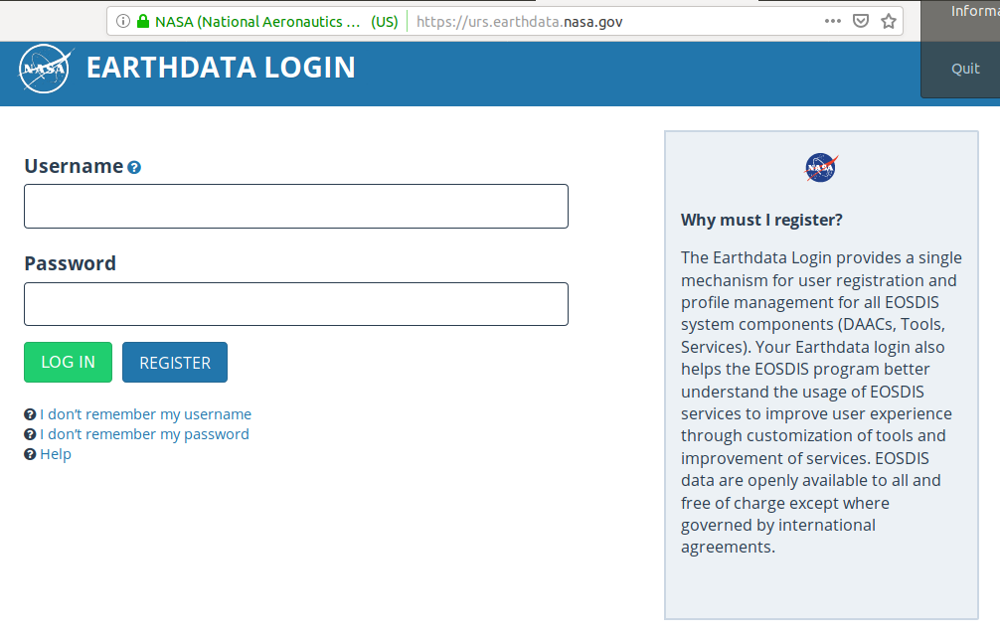

NASA Earthdata login
Overview
One of our earliest tutorials involves learning how to download ICESat-2 data directly from NASA's data portals. NASA maintains a number of different portals, but we'll be using the Earthdata portal. NASA Earthdata provides a convenient web map interface to a wide range of NASA earth observations. The data are stored at one of several Distributed Active Archive Centers (DAACs). We will be accessing ICESat-2 data from the National Snow and Ice Data Center DAAC.
Why do I need an Earthdata login?
Each participant will need a login. We will be teaching you ways to programmatically access ICESat-2 data from within your Python scripts. You will need to enter your Earthdata username and password in order for this to work.
Getting an Earthdata login
If you do not already have an Earthdata login, then navigate to the Earthdata Login page:

Enter a username and password, and then record this somewhere for use during the data access tutorial.